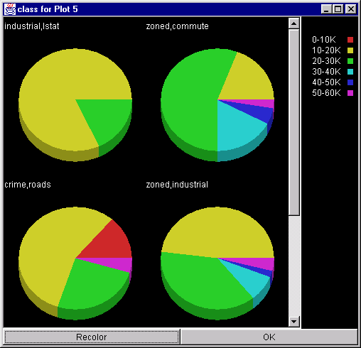

CViz
(v. 1.0)
Data Visualization Using
Cluster Guided Tours
User Manual
net.Mining Research & Development
Global Business Intelligent Solutions IBM Corporation
Almaden Research
650 Harry Rd
San Jose, CA 95120
dbmine@almaden.ibm.com
May 19, 1998
IBM Internal Use Only
Table Of Contents
Introduction
*Input Data Format
*Starting CViz
*Interpreting a CViz Scatter Plot
*Non-Linear Plot
*Linear Plot
*Simple Scatter Plot
*SVD-Centroids Plot
*Similarity Lines
*Coloring Points
*Getting Statistics and Naming Clusters
*Viewing Cluster Statistics
*Viewing Class Statistics
*Touring
*Tour Graph Arrays
*Best Tour Plot
*New Tour
*Slow Non-Linear Plots
*Animation Settings
*Zooming
*On a Cluster
*On a Class
*On Not X
*On Selected Points
*Other Features
*Uniform Data Range (0-1)
*Unitize all Examples
*Show Outliers
*Flatten Hierarchy
*Cluster (old view)
*Reduce Size Via Sampling
*Blow up Region
*View Attribute Range
*Density and Contour Graphs
*Recoloring Individual Legend Labels
*Editing Labels
*Optional Settings
*Reading/Saving Centroids or Data
*Reading/Saving Java Object
*Exporting a Plot
*Printing
*Saving Text Description
*Acknowledgements
*
CViz is a visualization tool for clustering and analysis of multi-dimensional data sets. It is most readily applicable to data sets containing between 100 and 50,000 examples where each example has between 2 and 200 mostly numerical components (dimensions) each describing a different attribute of the data. Optionally, each example may be provided with a classification value, indicating what class it belongs to. Ideally, there should be between 2 and 20 different nominal classes in the entire data set.
CViz is most valuable when applied to situations where little or no information is known about the relationships between attributes and class or between different attributes. CViz gives the data analyst a unique tool for viewing the entire set of data points across the most interesting dimensions in a short period.
CViz utilizes a k-means clustering algorithm to find interesting concepts in the data. It then draws two-dimensional scatter plots by selecting pairs or triples of concepts and relating these concepts to the data examples and the other concepts. By using an animation technique called, touring, CViz allows the analyst to quickly cycle through all the different pairs or triples of concepts and see how the data changes from one perspective to another. This can often provide a unique insight into underlying structure of the data.
CViz takes in flat file data in Comma Separated Value (CSV) format. This format is easily exported from spreadsheet applications such as Microsoft Excel. Each line of the file should be a list of floating-point values or strings separated by commas. In addition, the first line of the file should contain string identifiers for each attribute (column). One specially designated column may contain the class values (strings). This column is designated by the word "class" in the first row. An example of this format is shown below:
class,sepal length,sepal width,petal length,petal width
Iris-setosa,5.1,3.5,1.4,0.2
Iris-setosa,4.9,3.0,1.4,0.2
Iris-setosa,4.7,3.2,1.3,0.2
Iris-setosa,4.6,3.1,1.5,0.2
Iris-setosa,5.0,3.6,1.4,0.2
Iris-setosa,5.4,3.9,1.7,0.4
Iris-virginia,4.6,3.4,1.4,0.3
Iris-virginia,5.0,3.4,1.5,0.2
…
This data set has four attributes in columns 2-5: sepal length, sepal width, petal length, and petal width. It has a class, which is represented in the first column. The class values may also be integer values starting at zero and ending at one less than the number of classes.
Start CViz by typing "run" from within the CViz installation directory (optionally, you may provide the input data set as a command line argument). For example, from the File pulldown menu select Open Data File and then select the "iris.csv" data set for loading. If the file you have to load in is very large you may want to sample it instead of reading it all into memory. To do this select Open Sample of Data File from the File menu.
If the file you load in has a header describing the attribute names, a dialog will pop up asking you to select which attributes you wish to analyze via clustering as well as which attribute you would like to use for classification.
Interpreting a CViz Scatter Plot
A window like the one shown below should appear after you load in the iris data set.
This scatter plot should be interpreted as follows:
Since the example points each have four components (dimensions), this plot is not a true representation of the positions of the points in space. Some information is lost. What is not lost is the relative distance of each point to the primary centroids. This is represented accurately in the scatter plot.
There are four primary types of CViz scatter plots: linear, non-linear, SVD-Centroids, and simple. Non-linear is based on two primary centroids, while linear is based on three. The SVD plot can be based on any number of centroids greater than two. The simple scatter plot is not based on centroids at all, but simply plots the data along two selected dimensions at a time. Each plot displays the same information, but in a slightly different way. The linear plot of the iris data is the one we drew first (by default). To get a non-linear plot, select Non-Linear Plot in the Plot Type choice menu of the control panel, and then select the pulldown menu Execute->New Plot. You should see a plot similar to that shown below:
To get a scatter plot, select Simple Scatter Plot in the Plot Type choice menu of the control panel, and then select the pulldown menu Execute->New Plot. You should see a plot similar to that shown below:
To see other dimensions displayed in a different simple scatter plot, select View->SelectAxes. Select two different axes from the popup window that appears.
A non-linear plot is "non-linear" because it is based entirely upon the distance of every example point from the two primary cluster centroids. Thus, the x-coordinate of each example point is calculated from its distance to one primary centroid and the y-coordinate is its distance to the other primary centroid. The coordinates of each centroid in the scatter plot is calculated in a similar fashion. Notice that the primary centroids are on the x and y axis, since they are zero distance from themselves.
The geometry of using the distance measure to determine coordinates dictates that some regions of the scatter plot will be "off-limits" to all example points. An obvious example is the origin. A point at the origin would have to be zero distance from both centroids, which is impossible if the centroids are not located at the same point in space. These regions that can never contain an example point are illustrated as the gray areas in the diagram below:
The most basic form of the non-linear plot is one with only two clusters. To create a two-cluster plot set the plot type to Non-Linear and enter a 2 for Num Clusters. Then select Execute->Cluster (new view). The result should look something like this:
A linear plot is "linear" because it is based on straight linear projection of each example data point on to the plane formed by three cluster centroids. To see what this means, imagine a point in three-dimensional space. Now imagine a plane that is a non-zero distance from that point. The projection of the point in 3D space to the plane is the point on the plane that is closest to the point in 3D space.
The most basic form of the linear plot is one with exactly three clusters. To create a three-cluster plot, set the plot type to Linear and enter "3" in the Num Clusters field. Then select: Execute->Cluster (new view). The result should look something like this:
It is important to remember with linear plots that the position of points on the scatter plot is not necessarily similar to their relative position in the original attribute space. All that can be said with certainty is that each example’s position relative to the three primary centroids is correct.
A simple scatter plot is like a linear plot only it is based on viewing the data from the perspective of two selected attributes. In this case the plane of projection is not selected via cluster centroids but is arbitrarily chosen based on setting the values of all but two attributes to zero and graphing the remaining two attributes in an x-y fashion. In most cases this will result in much greater loss of information than a linear or non-linear plot projection. The advantage is that it allows the user to focus in on particular attributes of interest. To select the attributes to view, choose View->Select Axes after selecting Simple Scatter Plot from the Plot Type menu.
An SVD-Centroids plot is designed to retain the most possible information about a particular set of clusters. The advantage is that it allows the user to focus on a set of cluster that are known to be of interest. When this type of plot is selected in the Plot Type menu, the system will prompt the user for a list of the clusters that are of interest.
The problem with projecting high dimensional data on to 2-dimensional scatter plots is that some information is usually lost. One critical piece of information that is missing from both the linear and non-linear plots we have seen so far is how far the secondary centroids are in relation to each other in the original space. The distance of centroids to one another is an important indicator of how similar are the concepts they represent. Similarity lines are features that allow us to visually see this information on the scatter plot. As an example, look at a linear plot of the iris data set with 10 clusters:
Though it looks like there are defintely two "meta-clusters" in this picture we cannot really say beyond this which clusters are most similar (and therefore might be combined) so that we might reduce the number of clusters without losing interesting concepts. Now click on the Similarity Lines "Similarity" checkbox. The result should look something like the picture below:
Clusters that are relatively close to each other are connected with lines. The threshold at which clusters will be connected is determined by the slider setting. At this setting, we see that there are indeed two main cluster groups. If we reduce the similarity threshold slider, we get a picture like the one below:
At this similarity threshold we see three possible clustersAt this point we would want to see how the class labels are distributed across the differeng groups in order to determine the best grouping of clusters. This is done through coloring points, as described in the next section.
If desired, the system can join the clusters connected by similarity lines into a single cluster. This command can be executed by selecting Execute-> Join Similar Clusters. The result will be a reduced number of centroids equal to the number of cluster groups in the previous plot. The new cluster centroids are calculated as the mean of all points in the group.
CViz allows the analyst to apply colors to a scatter plot to reveal the cluster, group, and class membership of each data point. For example, if we select Group Colors from the Colors choice menu and then hit the Recolor button we see the following:
Notice that points whose cluster centroids are connected via a similarity line are now drawn with the same color. The colors are chosen at random by CViz. To select a different set of random colors, hit the Recolor button again. To see the specific cluster that each point belongs to, select Cluster Colors from the Colors choice menu and hit Recolor.
Finally, when the input data set provides a class column, we can color each data point according to its classification. Since classification is not represented anywhere else in the scatter plot (and in fact is not even taken into consideration during k-means clustering), this information can be very valuable to display, and can be a mechanism for validating the accuracy of the clustering. A good example of this can be seen on the iris data set by selecting Class Colors, setting Num Clusters to 3, and then selecting Execute->Cluster. The result should look similar to the picture below:
Notice how closely the classification coloring corresponds to the cluster coloring. This is a clear indication that the attributes are closely related to the classification variable.
Getting Statistics and Naming Clusters
In order to understand better the meaning behind a given clustering, it is necessary to look at aggregate statistics over the data in the cluster. Once the relationship of a cluster to the original data attributes is discovered, the cluster can then be given a more meaningful name than: "Cluster 3". In addition, the relationship between cluster membership and classification values can be further explored via statistics.
Cluster statistics are the means for each attribute over the set of data contained in the cluster. There are two ways to view cluster statistics: one-by-one and all at once.
In either case, the bar charts themselves should look like the example below:
This graph shows how the attribute values for the data in this particular cluster relates to the attribute values for the data set as a whole. By default the attributes are sorted (left to right) by decreasing proportional difference (both negative and positive) of the cluster mean from the mean as a whole. Also by default the values of the bars are shown in units of the mean over the entire data set. This allows for easy comparison between attributes with having different units of measure.
The graph shown above indicates that this cluster has unusually low values for "zoned", "crime", and "roads". We might therefore choose to give this cluster a name: "Low zoned, crime, roads". By typing this name into the box labeled Cluster Name, we can tell CViz to use this name in all future reference to this cluster.
For example if we name all the clusters for the housing data set based on their cluster statistics, and then Select "Cluster Colors" in the Colors choice menu and then hit the Recolor button, the result should look something like the picture below.
It is also possible to have CViz automatically name all the clusters in a plot, using a scheme similar to the process described above. To utilize this feature select Execute->Auto-Generate Cluster Labels from the pulldown menus. There are several methods of naming provided. Try different ones out to see which works best for your data. To let CViz pick the naming scheme, choose the last option or select Generate Names from the right click pop-up menu on the plot itself.
Class statistics are the attribute means over the set of data contained in the cluster. There are two ways to view cluster statistics: one-by-one and all at once.
Selecting View->View Class Distribution for the housing example will produce a set of pie charts similar to the ones shown below. Notice how, by labeling the clusters based on the attribute statistics that best represent their meaning, we can now use the class distribution pie charts to get meaningful information regarding the relationships between attributes and classification.

To get additional information about a class, simply click on the pie slice of interest. The background distribution for the selected cluster will appear and the slice will stand out from the other classes.
Up to this point we have focussed on using CViz to view individual scatter plots in isolation. In the case where you have only two clusters (or three in the case of a Linear plot), that is as much as we need. Whenever the data set is partitioned into more than three clusters, however, there is a choice as to which cluster centroids will be the primary centroids. This choice determines the perspective of the scatter plot. Changing this choice will change our perspective on the data set. Changing this perspective gradually by moving the points incrementally from one perspective to the next is called touring. In a sense, we are viewing the high dimensional space from many different two-dimensional perspectives, rotating gradually as we go so that we obtain a clearer mental picture of what’s going on in the data set.
To tour a data set, click on the Play button inside the Tour Location section of the Control Panel Window (make sure you have at least 4 clusters in your scatter plot). This causes a tour to begin. Watch how the scatter plot points move as the tour proceeds. You may change the color scheme as the tour is going on by selecting from the colors menu and clicking on Recolor. You may also add Similarity lines by clicking on the Similarity checkbox. Note how the Tour Location scrollbar indicates the system’s progress through the major steps of the tour. Each major step represents a different choice of primary centroids. When the Tour Location scrollbar reaches the rightmost end of the bar, it will start the tour over from the beginning.
Select Stop when you see a particularly interesting plot perspective. You may go to any major stop in the tour by moving the scrollbar locator by hand with the mouse. Alternatively, you may click on the arrow at either end of the scrollbar to move exactly one major stop in the tour.
You may view all the major stops in a tour by selecting View -> Tour Graph Array. The result will be a display of all scatter plots in miniature in a scrollable window like the one shown below.
You may click on any of the miniature plots to have the main plot window scroll to that location in the tour. The Tour Graph Array provides an excellent means for viewing the entire tour at once. For very large tours, a Previous and Next button are provided allowing the user to look at a batch of 21 plots at a time.
Each scatter plot that is a major stop in the tour has an information retention value. The greater this information, the better it represents the data set as a whole in the original data space. CViz provides a function that allows the user to search over all major stops in the tour to find the plot that retains the highest Energy. This plot can be found by clicking on the Best button. The scatter plot will then rotate to the best perspective from which to view the data set as a whole. This is not necessarily the best perspective for all purposes however. As long as the best perspective has energy less than 1.0, other perspectives may provide additional insight. Therefore, within your own time constraints and depending on the complexity of the data, it is recommended that you view as much of the tour as possible to get the clearest possible picture of your data set.
The tour that CViz computes for a clustering is a randomly chosen path through all possible selections of primary cluster centroids. The order in which these centroids (major steps) are chosen will have an effect on the in between projections (minor steps) of the tour. CViz provides a means for selecting a different random path via the New Tour button. Selecting this button will cause the tour to be recalculated (with a new random order) and to be started over from the beginning.
In the case of Non-Linear scatter plots, CViz provides two different methods for interpolating between major steps of the tour. The default method is fast, but not very accurate. It simply creates a curved path from one major point to the next. The second method of interpolation is slower but more accurate. It moves the primary centroids along a curved path and then recalculates the distances of each point from the primary centroids at their new position.
To view this second type of tour select Slow Non-Linear Plot from Plot Type choice menu and then select Execute->New Plot from the pulldown menus. Start the tour as before using the Play button. Note that Slow Non-Linear Plots behave in all other ways the same as Non-Linear plots. It is only during touring that you will notice any difference.
To adjust the speed and quality of the animation during touring, select View->View Animation Settings from the pulldown menus. This will bring up a popup Window that allows you to modify some parameters of the tour.
Animation Speed is used to adjust the waiting period between interpolations (minor steps). This value should be increased if the data set size is large (depending also on the speed of the hardware you are using). Animation Detail changes the number of frames (minor steps) drawn between every pair of major steps. Smooth Tour creates a more rotational tour when on. Without smoothing, the tour will tend to be more herky-jerky between major steps. It will however retain more energy.
Zooming in CViz is the act of creating a new scatter plot from an existing scatter plot by reducing the number of data points displayed. The purpose of zooming is to focus on a specific subset of the original data set to understand it more clearly. CViz provides many different ways of selecting the subset of points you wish to zoom in on. These are described in detail below.
Zooming in on a cluster can be done in one of three ways:
After zooming the number of data points displayed at the top of the new plot will now be less than the number displayed in the original. Class colors will be the same in the new plot as will cluster colors unless the clustering was redone (e.g. via Shift-Click). Below is a plot showing cluster 2 zoomed?
Use the Windows pulldown menu to switch between different scatter plots. Notice how the name of the zoomed plot indicates that it represents a selected cluster from the original plot.
To zoom in on a class, select Execute->Zoom->ClassName from the pulldown menus. The result will be a new scatter plot with the same cluster centroids as the original but displaying only those data points contained in the selected class. Class colors and cluster colors will be the same in the new plot.
In some cases, it may be useful to see all the data except that belonging to a certain class. To do this in CViz, select Execute->Zoom Not->ClassName from the pulldown menus. The result will be a new scatter plot with the same cluster centroids as the original but displaying only those data points not contained in the selected class.
In some cases, you may wish to select individual data points to zoom on that are not entirely represented by a cluster or class. This is accomplished in CViz via brushing. Brushing allows the user to select individual data points in a scatter plot simply by dragging the mouse cursor across the desired points.
To enable brushing simply turn on the Checkbox Brush in the Colors section of the Control Panel Window. Now hold down the mouse button and drag the cursor over the points in the scatter plot that you wish to select. These points will be colored white to indicate that they have been selected.
After selecting the desired points, choose Execute->Zoom->Brushed Points from the pulldown menus (or alternatively Execute->Zoom Not->Brushed Points). You can also choose View -> View Brushed Points Info to see statistics for the selected point(s).
The following additional features are available through the CViz user interface as conveniences to the user for specific applications. They are not generally required for a typical data analysis and visualization.
In cases where the underlying data set has some attributes whose min and max values have a much larger range than others, a feature is provided for normalizing those attributes to range from zero to one. The Execute->Uniform Data Range (0-1) command allows the user to select which attributes in the data set are to be normalized. The individual values for these attributes will then be transformed so that the minimum value is zero and the maximum value is one. Relative value magnitudes within the attribute will remain unchanged.
In cases where the underlying data set has some vectors with very large magnitude and others with very small it may be useful to convert all vectors to a magnitude of one. The Execute->Unitize all Examples command allows the user do this. Each example is converted to a unit vector by dividing every vector element by the vector magnitude.
In some data mining applications it is important to determine which example data points are more abnormal (e.g. fraud and abuse). CViz provides a feature to make this determination quick and easy. Simply select Show Outliers from the right click pop-up menu on any CViz plot. The example point that is furthest from each cluster centroid will then be highlighted with a circle.
Whenever you have created sub-clusters from a plot via the Cluster a Cluster command, it is possible to roll the resulting clusters back into the original plot by selecting: Execute->Flatten Cluster Hierarchy. The new plot will replace any cluster centroid which has been sub-clustered with the cluster centroids of that sub-clustering. The data points will then be reclassified. Use the command Execute-> Cluster (centroids as seeds) to have the K-Means clustering algorithm run again with these centroids as a starting point. This will enable you to find a stable state that is similar to the original state.
To view a different clustering from the same viewpoint (plane) as the current clustering, select Execute->Cluster (old view). This function can be a useful way to view a clustering that has a large number of clusters by beginning with a smaller number of clusters.
To decrease the number of example points in a plot, select Execute->Reduce size via sampling. This will not recluster the data set, but simply reduces the number of example points displayed in the plot. This can be a practical way to view a data set that is so large it overwhelms the display resources of the computer.
For some data sets there may be some regions of a CViz plot that contain a high density of points. In such cases the points within that high density region may be hard to interpret. CViz provides a feature that allows the user to blow up such regions in order to see what is going on more clearly. The View->Blow Up Region command shows the user a new window displaying a magnified square region of the original plot.
The magnification box can be moved by dragging the mouse in the original plot and it can be resized by dragging the mouse on the lower right corner of the box. To close the magnification box, simply click on the upper right corner of the Blow up window.
In order to determine whether the underlying data set has some attributes whose min and max values have a much larger range than others, a feature is provided for viewing the attribute ranges. The View->View Attribute Range command shows the user a whisker chart similar to the one shown below.
The black dot in each row represents the mean for the attribute. The red confidence bar represents one standard deviation from the mean and the blue tick mark represents the min and max value for the attribute. Clicking on a row will cause the mean value to be displayed.
One weakness of scatter plots is that when many points are close together in space it can be difficult or in possible to distinguish them. Density and Contour graphs help to alleviate this problem by using colors to represent density of points in a given area of space. A density graph colors it’s space based on how many example points fall exactly within a given square area of the original scatter plot. A Contour graph does something similar, but it also smoothes out the coloring by taking into account the density of neighboring regions, when coloring a given region. These two plots are shown below for the housing data.
In both cases density of points is indicated by the hue of the region. The scale on the right side of the plot shows the meaning of the colors. The purple colors at the top of the scale indicate regions of lowest density and the orange colors at the bottom of the scale indicate regions of highest density. To view a CViz plot in this way, simply select the option from the View menu or from the right click plot menu.
Recoloring Individual Legend Labels
If you wish to select a specific color for a legend label on a scatter plot, simply Shift-Click on the icon in the legend. This should bring up a Color Chooser Window like the one below.
You may select any color in this window. The color will appear in the horizontal bar near the bottom of the window. To darken or lighten the set of available colors, use the Color Intensity scrollbar. The Recolor button allows you to obtain a different set of colors in the squares on the right side of the window.
Labels for clusters or attributes may be edited via the Edit pulldown menu. Note that the cluster labels will only apply to scatter plot clustering you are working with. The attribute labels will be applied to all plots. You may need to Recolor a plot to see the new labels displayed.
Some additional display controls are available via a popup display Window. To view this window select View->View Optional Settings from the pulldown menus.
The checkboxes shown in this window have the following functionality:
The default display settings are normally the ones you would use for most applications.
Reading/Saving Centroids or Data
Centroid positions may be saved out to or read in from a file using File->Save Centroid and File-> Read Centroid. This can be especially useful when a particular clustering reveals something in the data. Since the initial starting points for the cluster centroids is random, there is no guarantee that reclustering will produce exactly the same results. The data set points of a scatter plot can also be saved or read in from a file using File->Read Examples and File->Save Examples. This will only save the data points shown in the current scatter plot.
You can also save the cluster membership (i.e. which cluster does each individual point belong to) out to a file via the File->Save Membership option.
To save out a data set in sparse format, use the File -> Save Examples (sparse) command.
All useful information about a given plot may be saved out to file for later read in by CViz. To do this select the plot you wish to save and then select File->Save Java Object. This can be especially useful when you have given intelligent names to the clusters in a plot. To read the information back in, simply load the file using the File->Open Data File command.
Any scatter plot may be exported to a file in comma separated value format. The exported values may be read easily into a spreadsheet program such as Excel. Each point is labeled by its cluster membership.
Scatter plots may be printed to a local print device using the File->Print command.
The File->Save Text Description command saves out a verbal description of every cluster in every visible scatter plot. The descriptions are based on the mean attribute values for the data contained in each cluster.
CViz was the original brainchild of Dharmendra Modha, Scott Spangler, and Shivakumar Vaithyanathan. Dharmendra worked out the underlying equations. The software was developed in Java by Scott utilizing a K-Means clustering algorithm written previously by Shiv. Scott also put together this user manual. Inderjit Dhillon came up with the theory behind SVD-Centroid plots.
In developing the user interface, Scott benefited from the advice and suggestions of Mark Plutowski, and David Martin.
Of course, this CViz work would not have been possible without the support of the whole net.Mining R&D group and IBM corporation.